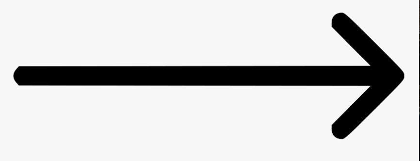

|
 |
|
|


The Lindell Library is our three story library that is connected
to the rest of campus through three skyways. It was built in 1997. There are individual study spaces,
group meeting rooms, and 300 computers for free printing and homework. Lindell also
houses the Writing lab, the CLASS office, TRIO student support services, College Possible,
Academic Advising, and the Academic Skills office. This is also where the IT department
is located if you need help with your devices.
3rd Floor: Offers individual and group study spaces along with computers for coursework.
2nd Floor: Home to the CLASS Offices, TRIO Student Support Services, College Possible, Academic Advising, and the Academic Skills Office.
1st Floor: A learning commons that allows students to checkout books, movies, and even laptops.
Basement: Known as the quiet floor where students can go if they seek peace and quiet when studying.
| Map | More Information | Home |
 |
 |